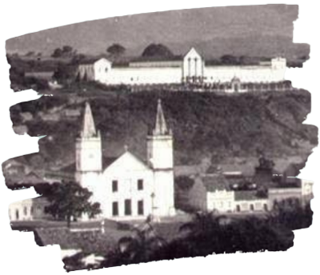

A capital da cultura do Cariri
cidade com uma rica história que se entrelaça com o desenvolvimento do interior nordestino. Conhecida como o "Oásis do Sertão" devido às suas características climáticas mais úmidas, a cidade tem muito a oferecer tanto em termos de cultura quanto de beleza natural.
Antes da chegada dos europeus, a região onde hoje se encontra Juazeiro do Norte era habitada por povos indígenas. A cidade, como conhecemos hoje, começou a se formar em torno de uma capela construída no século XIX, em um local estratégico que ligava outras cidades importantes da região.
A chegada de Padre Cícero em 1872 foi um marco fundamental para a história de Juazeiro do Norte. Sua fé, carisma e capacidade de mobilizar as pessoas transformaram um pequeno povoado em um importante centro religioso. Milhares de romeiros começaram a visitar a cidade para buscar cura e bênçãos, impulsionando o crescimento econômico e a construção de diversos edifícios religiosos.
Antes da chegada dos europeus, a região onde hoje se encontra Juazeiro do Norte era habitada por povos indígenas. A cidade, como conhecemos hoje, começou a se formar em torno de uma capela construída no século XIX, em um local estratégico que ligava outras cidades importantes da região.
Ao longo de sua história, Crato desenvolveu uma identidade cultural única, marcada pela influência de diferentes povos e culturas. A cidade é conhecida por sua rica tradição musical, com destaque para o forró e o xote. A religiosidade também é um aspecto importante da cultura cratense, com diversas festas e procissões religiosas ao longo do ano.